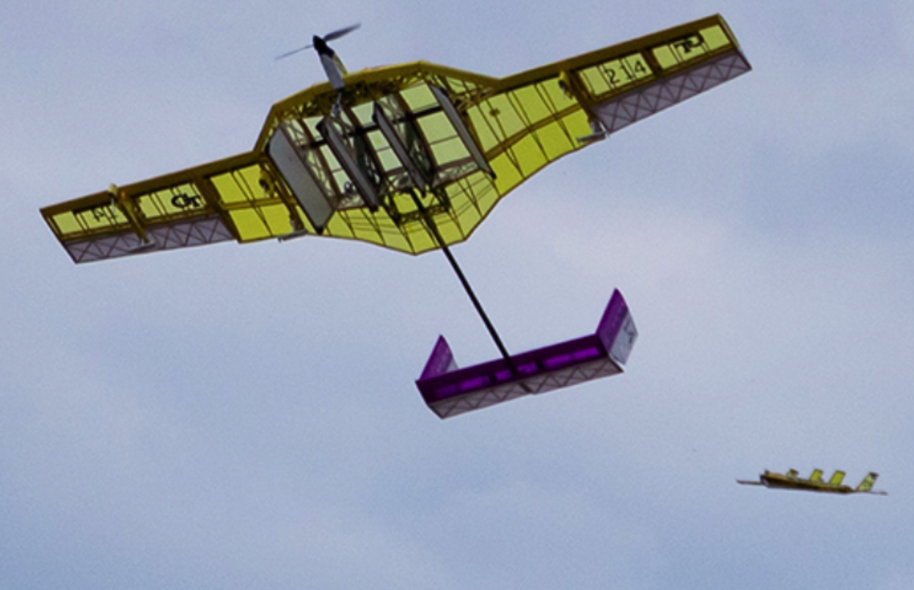

I'm Joshua Ginsberg, currently in my senior year of Mechanical Engineering at the University of Delaware, with a strong focus on aerospace and a substantial proficiency in additive manufacturing. My academic journey has been a rich tapestry of innovation, hands-on experience, and transforming abstract ideas into tangible outcomes. I’ve dedicated myself to a plethora of projects, meticulously crafting intricate components and bringing life-sized movie props from the realm of imagination to reality.
Delving into the fabric of my professional persona, I am Joshua Ginsberg, a tenacious and enthusiastic senior at the University of Delaware, where my academic odyssey is deeply entrenched in Mechanical Engineering, with a deliberate concentration on the expansive skies of Aerospace. Born and bred as a Delaware native, my formative years at Appoquinimink High School laid the foundation for a lifetime of curiosity and the relentless pursuit of engineering mastery. My Delawarean heritage is not just a footnote in my history; it is the cornerstone of my identity, shaping my perspectives and fueling my ambitions.
Within the halls of academia and beyond, my engineering journey has been a meticulous synthesis of theory and application. From the digital conception of complex mechanisms to the tangible realization of scaled movie props and the symphony of machinery in motion, my portfolio chronicles a relentless quest for precision, quality, and innovation. Each project has been a stepping stone, a learning experience, and an opportunity to push the boundaries of what is possible.
Beyond the confines of laboratories and lecture halls, I have fostered a wealth of diverse interests that sculpt my character and enrich my life. The discipline of weightlifting parallels the rigors of engineering, each lift a study in the physics of force and resistance, and each session a testament to the power of perseverance. The world of coding is a playground for my analytical mind, each line of code a brushstroke on the canvas of creation. Cycling offers a breath of freedom, the rush of wind a reminder of the aerospace dreams I chase, while gaming presents a multiverse of strategy, reflex, and narrative—a mental gymnastics that keeps my problem-solving skills sharp.
My leadership journey as the Wings Lead Engineer with the ASAE Aero Society has been a narrative of ambition, strategy, and precision. It has allowed me to orchestrate projects with the meticulous care of a maestro, each project a movement in the symphony of aerospace engineering. This is complemented by my tenure as a Teaching Assistant, where I have had the profound privilege of molding the next wave of engineering talent—guiding, instructing, and inspiring in equal measure.
This online portfolio represents more than a showcase of past accomplishments; it is a living document, evolving with each new experience, project, and triumph. As I stand on the precipice of a bright future in the aerospace sector, I remain rooted in the community that has raised me, fueled by the interactions and collaborations that the digital world affords. My virtual door is always open to fellow enthusiasts, curious minds, and professional collaborators who are eager to discuss the future's potential and to forge alliances in innovation and design.
Thank you sincerely for your presence and interest in my professional journey. As you peruse the details of my work and insights, know that the spirit of collaboration, mentorship, and innovation is the wind beneath the wings of my career. I eagerly anticipate the opportunity to connect with you, to learn from your perspectives, and to explore how we might jointly elevate the field of aerospace to unparalleled heights. Let us venture boldly into a future where our combined efforts culminate in the extraordinary—a future where the sky is not the limit but the beginning.